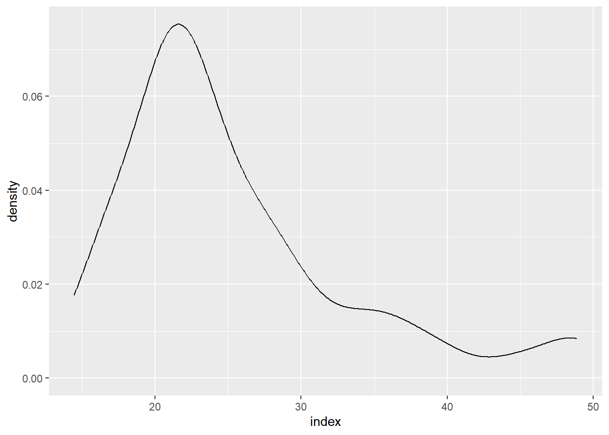

library(gsheet)
library(readxl)
fungicida <- gsheet2tbl("https://docs.google.com/spreadsheets/d/1bq2N19DcZdtax2fQW9OHSGMR0X2__Z9T/edit#gid=866852711")
library(ggplot2)
library(ggthemes)Aula 6
Scatter plot
fungicida |>
ggplot(aes(trat, sev, color = trat)) +
geom_jitter(width = 0.1,
color = "grey60") +
stat_summary(fun.data = mean_se,
color = "red")fungicida |>
ggplot(aes(sev, yld)) +
geom_point(size = 3) +
scale_color_colorblind() +
geom_smooth(method = "lm")fungicida |>
ggplot(aes(sev, yld)) +
geom_point(size = 3) +
scale_color_colorblind() +
geom_smooth(method = "lm",
se = FALSE,
color = "red",
linetype = 3)
milho <- read_excel("dados-diversos.xlsx", "milho")
milho |>
ggplot(aes(hybrid, yield, color = method)) +
geom_jitter()milho <- read_excel("dados-diversos.xlsx", "milho")
milho |>
ggplot(aes(hybrid, index, color = method, size = yield)) +
geom_jitter()milho <- read_excel("dados-diversos.xlsx", "milho")
milho |>
ggplot(aes(method, yield, color = method, size = index)) +
geom_jitter(width = 0.1) +
facet_wrap(~hybrid)cy <- milho |>
ggplot(aes(yield)) +
#facet_wrap(~hybrid) +
geom_histogram(bins = 10,
color = "black",
fill = "green") +
theme_clean() +
labs(y = " ", x = "Yield") di <- milho |>
ggplot(aes(index)) +
#facet_wrap(~hybrid) +
geom_histogram(bins = 10,
color = "black",
fill = "green") +
theme_clean() +
labs(y = " ", x = "Diseaase Index") library(patchwork)
(cy | di) +
plot_annotation(tag_levels = "A") ggsave("histograms.png")milho |>
ggplot(aes(x = index)) +
geom_density()
milho |>
ggplot(aes(index, yield)) +
geom_density_2d()insect <- read_excel("dados-diversos.xlsx", "mortalidade")
library(tidyverse)
insect |>
pivot_longer(2:3,
names_to = "status",
values_to = "value") |>
ggplot(aes(inseticida, value, fill = status)) + geom_col() + theme_clean()